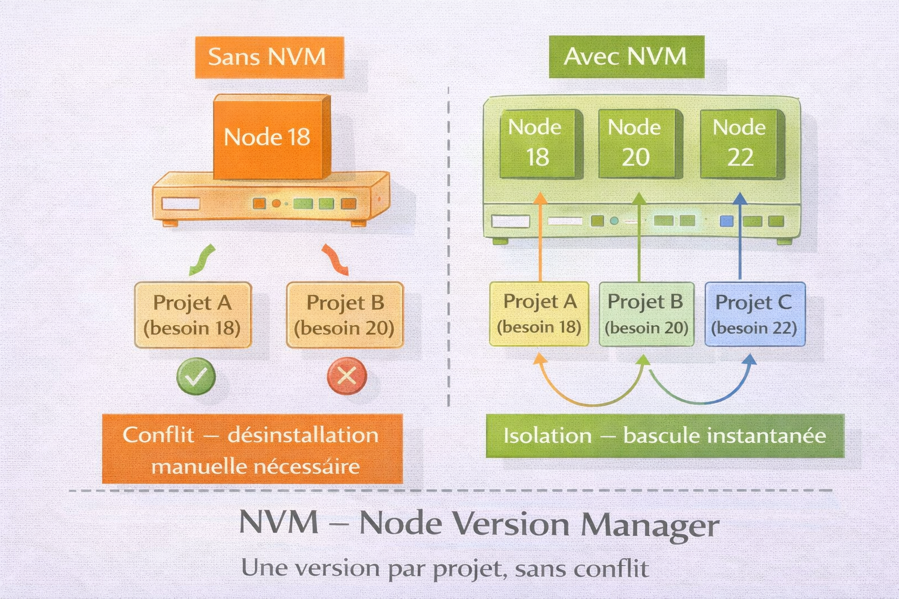
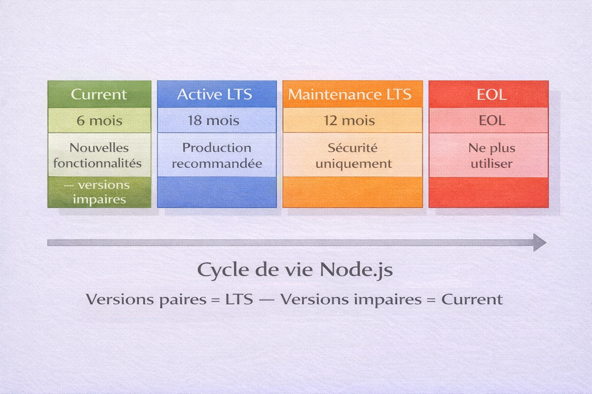
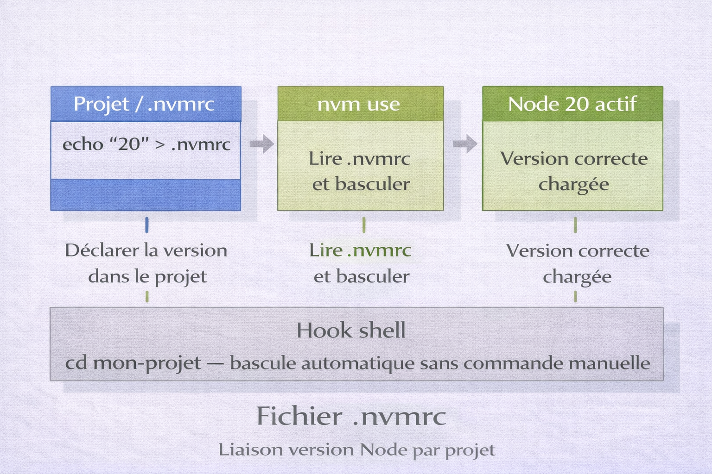

NVM — Node Version Manager¶
Analogie
Un traducteur professionnel qui travaille sur plusieurs projets simultanément : un roman médiéval nécessite un français du XIIIe siècle, un contrat commercial demande un français juridique moderne, un manga requiert un français contemporain familier. NVM fonctionne exactement ainsi : il permet de basculer instantanément entre différentes versions de Node.js selon les besoins de chaque projet, sans conflit ni réinstallation.
NVM (Node Version Manager) est un gestionnaire de versions Node.js qui permet d'installer, gérer et basculer entre plusieurs versions de Node.js sur une même machine. C'est devenu l'outil standard de l'industrie pour les développeurs JavaScript et TypeScript, résolvant élégamment les problèmes de compatibilité entre projets nécessitant des versions Node différentes.
Node.js est un environnement d'exécution JavaScript qui permet d'exécuter du code JavaScript en dehors du navigateur — pour créer des serveurs web, des outils en ligne de commande, des applications desktop. npm (Node Package Manager) est le gestionnaire de paquets livré avec Node.js.
Avant NVM, les développeurs devaient désinstaller et réinstaller Node.js manuellement à chaque changement de projet, ou maintenir des configurations complexes. NVM transforme cette contrainte en une simple commande : nvm use 18 ou nvm use 20.
Pourquoi c'est important
NVM permet de travailler sur plusieurs projets avec des versions Node différentes, de tester la compatibilité du code, de basculer instantanément entre versions LTS et current, d'isoler les environnements par projet et de suivre les bonnes pratiques de l'écosystème JavaScript moderne.
Pourquoi utiliser NVM¶
Le problème concret¶
L'image ci-dessous illustre le problème central que NVM résout. Avoir plusieurs projets nécessitant des versions Node différentes est la situation normale d'un développeur actif — pas un cas exceptionnel.

Sans NVM, une seule version de Node est disponible sur la machine — changer de projet nécessite une désinstallation manuelle. Avec NVM, chaque projet peut spécifier sa version via un fichier .nvmrc et la bascule est instantanée. Les packages npm globaux restent isolés par version.
flowchart TB
A[Développeur]
B["Projet Legacy\nNode 14 LTS"]
C["Projet Production\nNode 20 LTS"]
D["Projet R&D\nNode 22 Current"]
E["Tests CI/CD\nMultiples versions"]
A --> B
A --> C
A --> D
A --> ECas d'usage concrets justifiant plusieurs versions : applications legacy figées sur Node 12 ou 14, applications stables en production sur Node 18 ou 20 LTS, développement avec les nouvelles fonctionnalités Node 22+, tests de compatibilité multi-versions, pipelines CI/CD, modules natifs nécessitant une version spécifique, migrations progressives avant passage en production.
Versions Node.js — Comprendre les releases¶
L'image ci-dessous représente le cycle de vie des versions Node.js. Savoir lire ces cycles est indispensable pour décider quelle version installer en production et anticiper les dates de fin de support.

Les versions paires (18, 20, 22) sont des versions LTS — elles reçoivent 30 mois de support. Les versions impaires (19, 21, 23) sont des versions Current — elles reçoivent 6 mois de support et servent à expérimenter les nouvelles fonctionnalités. Une version en Maintenance LTS ne reçoit plus que les correctifs de sécurité critiques.
gantt
title Cycle de vie des versions Node.js
dateFormat YYYY-MM
section Node 18 LTS
Active LTS :a1, 2022-10, 2023-10
Maintenance LTS :a2, 2023-10, 2025-04
section Node 20 LTS
Current :b1, 2023-04, 2023-10
Active LTS :b2, 2023-10, 2024-10
Maintenance LTS :b3, 2024-10, 2026-04
section Node 22 LTS
Current :d1, 2024-04, 2024-10
Active LTS :d2, 2024-10, 2025-10
Maintenance LTS :d3, 2025-10, 2027-04| Type | Versions | Durée support | Usage |
|---|---|---|---|
| LTS Active | Paires (20, 22) | 18 mois | Production — recommandé |
| Maintenance LTS | Paires après Active | 12 mois | Sécurité uniquement |
| Current | Impaires (21, 23) | 6 mois | Expérimentation |
| EOL | Toutes après maintenance | — | Ne plus utiliser |
Règle de décision versions
En production, toujours utiliser la dernière version LTS Active. En développement, tester sur Current pour anticiper les migrations. Planifier la migration avant la date EOL — ne jamais rester sur une version EOL.
Installation¶
Linux et macOS¶
# Méthode curl
curl -o- https://raw.githubusercontent.com/nvm-sh/nvm/v0.39.7/install.sh | bash
# Méthode wget
wget -qO- https://raw.githubusercontent.com/nvm-sh/nvm/v0.39.7/install.sh | bash
Le script clone le repo dans ~/.nvm et ajoute automatiquement la configuration au fichier de profil shell.
export NVM_DIR="$HOME/.nvm"
[ -s "$NVM_DIR/nvm.sh" ] && \. "$NVM_DIR/nvm.sh" # Charge nvm
[ -s "$NVM_DIR/bash_completion" ] && \. "$NVM_DIR/bash_completion" # Autocomplétion
# Bash
source ~/.bashrc
# Zsh
source ~/.zshrc
# Vérifier l'installation
nvm --version
# v0.39.7
Windows — nvm-windows¶
NVM natif ne fonctionne pas sous Windows. Utiliser nvm-windows — un projet distinct.
# Via Chocolatey
choco install nvm
# Via Scoop
scoop install nvm
# Vérifier
nvm version
# 1.1.12
L'installeur graphique est disponible sur github.com/coreybutler/nvm-windows/releases.
Différences nvm-windows
nvm-windows est un port distinct — nvm list au lieu de nvm ls, nvm use nécessite PowerShell en mode administrateur, les fichiers .nvmrc ne sont pas chargés automatiquement.
WSL¶
curl -o- https://raw.githubusercontent.com/nvm-sh/nvm/v0.39.7/install.sh | bash
source ~/.bashrc
nvm --version
Installer nvm Linux dans WSL plutôt que nvm-windows dans Windows — syntaxe standard, .nvmrc automatique, performances natives, intégration VSCode Remote-WSL complète.
Utilisation de base¶
Installer des versions Node.js¶
# Installer la dernière LTS
nvm install --lts
# Installer une LTS par nom de code
nvm install lts/iron # Node 20 LTS
nvm install lts/hydrogen # Node 18 LTS
# Installer la dernière version current
nvm install node
# Installer une version spécifique
nvm install 20.10.0
nvm install 18.19.0
# Installer en mettant npm à jour en même temps
nvm install 20 --latest-npm
# Installer sans basculer immédiatement
nvm install 20 --no-use
# Toutes les versions disponibles
nvm ls-remote
# Versions LTS uniquement
nvm ls-remote --lts
# Versions LTS d'une famille
nvm ls-remote --lts=iron
Lister et utiliser les versions installées¶
nvm ls
# Résultat exemple :
# v18.19.0
# -> v20.10.0
# default -> 20.10.0 (-> v20.10.0)
# node -> stable (-> v20.10.0) (default)
# Afficher le chemin d'installation d'une version
nvm which 20
# /home/user/.nvm/versions/node/v20.10.0/bin/node
# Basculer sur une version spécifique
nvm use 20
nvm use 18.19.0
# Basculer sur la dernière LTS installée
nvm use --lts
# Basculer sur la version système (si Node installé hors NVM)
nvm use system
# Vérifier après basculement
node --version
npm --version
which node
Définir la version par défaut¶
# Définir la version par défaut pour les nouveaux shells
nvm alias default 20
# Utiliser la dernière LTS comme défaut
nvm alias default lts/*
# Vérifier
nvm ls
# default -> 20 (-> v20.10.0)
Chaque nouveau terminal démarre avec la version default. nvm alias ne change pas la version du terminal courant — utiliser nvm use pour le shell actif.
Désinstaller une version¶
Basculer avant de désinstaller
Il est impossible de désinstaller la version en cours d'utilisation. Basculer sur une autre version d'abord : nvm use 20 puis nvm uninstall 18.
Gestion avancée¶
Fichier .nvmrc¶
L'image ci-dessous illustre comment le fichier .nvmrc lie une version Node à un projet et comment les hooks shell automatisent la bascule. C'est le mécanisme central pour garantir qu'une équipe utilise la même version Node sur un projet donné.

Le fichier .nvmrc à la racine d'un projet contient une version Node — exacte, majeure ou alias LTS. La commande `nvm use` lit ce fichier et bascule sur la version correspondante. Un hook shell peut automatiser cette bascule à chaque changement de répertoire — plus besoin d'y penser manuellement.
cd mon-projet
# Utiliser la version actuellement active
node --version > .nvmrc
# Spécifier manuellement
echo "20.10.0" > .nvmrc # Version exacte
echo "20" > .nvmrc # Dernière 20.x installée
echo "lts/iron" > .nvmrc # Alias LTS
cd mon-projet
# Lire et appliquer la version du .nvmrc
nvm use
# Si la version n'est pas installée — l'installer puis l'activer
nvm install
Automatiser avec un hook shell :
# Bascule automatiquement sur le .nvmrc en changeant de répertoire
autoload_nvmrc() {
if [[ -f .nvmrc && -r .nvmrc ]]; then
nvm use
elif [[ $(nvm version) != $(nvm version default) ]]; then
nvm use default
fi
}
cd() {
builtin cd "$@"
autoload_nvmrc
}
autoload_nvmrc
autoload -U add-zsh-hook
load-nvmrc() {
local node_version="$(nvm version)"
local nvmrc_path="$(nvm_find_nvmrc)"
if [ -n "$nvmrc_path" ]; then
local nvmrc_node_version=$(nvm version "$(cat "${nvmrc_path}")")
if [ "$nvmrc_node_version" = "N/A" ]; then
nvm install
elif [ "$nvmrc_node_version" != "$node_version" ]; then
nvm use
fi
elif [ "$node_version" != "$(nvm version default)" ]; then
nvm use default
fi
}
add-zsh-hook chpwd load-nvmrc
load-nvmrc
Aliases personnalisés¶
# Créer des aliases métier
nvm alias production 20.10.0
nvm alias development 22.0.0
nvm alias legacy 18.19.0
# Utiliser
nvm use production
nvm use legacy
# Lister tous les aliases
nvm alias
# Supprimer un alias
nvm unalias production
Migration de packages globaux¶
Les packages npm globaux ne sont pas partagés entre versions Node. Changer de version revient à repartir d'un environnement vide pour les packages globaux.
# Installer une nouvelle version en copiant les packages globaux de l'ancienne
nvm install 22 --reinstall-packages-from=20
# Lister les packages globaux actuels
npm list -g --depth=0
# Sauvegarder la liste
npm list -g --depth=0 --json | jq -r '.dependencies | keys[]' > ~/npm-global-packages.txt
# Restaurer sur la nouvelle version
nvm use 22
cat ~/npm-global-packages.txt | xargs npm install -g
Minimiser les packages globaux
Utiliser npx plutôt que d'installer globalement — la commande est téléchargée à la volée si nécessaire et toujours à jour. npx tsc --version plutôt que npm install -g typescript.
Utilisation dans des scripts¶
#!/usr/bin/env bash
# Charger NVM explicitement dans le script
export NVM_DIR="$HOME/.nvm"
[ -s "$NVM_DIR/nvm.sh" ] && \. "$NVM_DIR/nvm.sh"
# Utiliser la version du projet si .nvmrc présent
if [ -f .nvmrc ]; then
nvm install
nvm use
fi
npm install
npm run build
Configuration avancée¶
Variables d'environnement¶
# Répertoire d'installation (défaut : ~/.nvm)
export NVM_DIR="$HOME/.nvm"
# Miroir de téléchargement Node.js (défaut : nodejs.org)
export NVM_NODEJS_ORG_MIRROR="https://nodejs.org/dist"
# Miroir alternatif (derrière le Great Firewall)
export NVM_NODEJS_ORG_MIRROR="https://npmmirror.com/mirrors/node"
Lazy loading — démarrage shell plus rapide¶
NVM ralentit légèrement l'ouverture du terminal car il se charge à chaque démarrage. Le lazy loading ne charge NVM que lorsqu'une commande nvm ou node est effectivement appelée.
export NVM_DIR="$HOME/.nvm"
# Ajouter Node au PATH sans charger tout NVM
export PATH="$NVM_DIR/versions/node/$(cat $NVM_DIR/alias/default)/bin:$PATH"
# Proxy — charge NVM réellement au premier appel
nvm() {
[ -s "$NVM_DIR/nvm.sh" ] && \. "$NVM_DIR/nvm.sh"
nvm "$@"
}
# ~/.zshrc
plugins=(... nvm)
zstyle ':omz:plugins:nvm' lazy yes
Intégration outils et CI/CD¶
VSCode¶
{
"terminal.integrated.defaultProfile.linux": "bash",
"terminal.integrated.profiles.linux": {
"bash": {
"path": "/bin/bash",
"args": ["-l"]
}
},
"typescript.tsdk": "node_modules/typescript/lib"
}
L'argument -l (login shell) garantit que NVM est chargé dans le terminal intégré VSCode.
GitHub Actions¶
name: Tests
on: [push, pull_request]
jobs:
test:
runs-on: ubuntu-latest
strategy:
matrix:
node-version: [18, 20, 22]
steps:
- uses: actions/checkout@v4
- name: Setup Node.js
uses: actions/setup-node@v4
with:
node-version: ${{ matrix.node-version }}
cache: 'npm'
- run: npm ci
- run: npm test
- name: Setup Node.js
uses: actions/setup-node@v4
with:
node-version-file: '.nvmrc'
cache: 'npm'
GitLab CI¶
stages:
- test
test:node-18:
image: node:18
stage: test
script:
- npm ci
- npm test
test:node-20:
image: node:20
stage: test
script:
- npm ci
- npm test
Docker¶
# Utiliser l'image Node officielle plutôt que NVM dans Docker
FROM node:20-alpine AS build
WORKDIR /app
COPY package*.json ./
RUN npm ci
COPY . .
RUN npm run build
FROM node:20-alpine
WORKDIR /app
COPY --from=build /app/dist ./dist
COPY package*.json ./
RUN npm ci --omit=dev
CMD ["node", "dist/index.js"]
NVM dans Docker — cas rare
Dans la grande majorité des cas, utiliser l'image officielle node:VERSION est préférable à installer NVM dans un conteneur. NVM dans Docker n'est justifié que pour des scénarios très spécifiques : tests multi-versions dans un même conteneur.
Package.json — Bonnes pratiques¶
Déclarer la version Node requise¶
{
"name": "mon-projet",
"version": "1.0.0",
"engines": {
"node": ">=20.0.0 <21.0.0",
"npm": ">=10.0.0"
}
}
{
"scripts": {
"preinstall": "npx check-node-version --node $(cat .nvmrc)"
}
}
Le champ engines est informatif par défaut — il n'empêche pas l'installation avec une version incompatible sauf si engine-strict=true est configuré dans .npmrc.
Dépannage¶
nvm: command not found¶
# Vérifier que NVM est bien installé
ls -la ~/.nvm
# Ajouter manuellement la configuration au profil
echo 'export NVM_DIR="$HOME/.nvm"' >> ~/.bashrc
echo '[ -s "$NVM_DIR/nvm.sh" ] && \. "$NVM_DIR/nvm.sh"' >> ~/.bashrc
source ~/.bashrc
La version ne persiste pas entre terminaux¶
La version définie par nvm use ne s'applique qu'au shell courant. Pour qu'une version soit active par défaut dans tous les nouveaux terminaux :
Erreur de permissions npm (EACCES)¶
Avec NVM, ne jamais utiliser sudo pour les packages npm globaux — NVM gère les permissions dans son propre répertoire.
# Ne jamais utiliser sudo avec NVM
# sudo npm install -g typescript <- incorrect
# La bonne approche — NVM gère les droits
npm install -g typescript
# Si le problème persiste, réinstaller la version via NVM
nvm deactivate
nvm uninstall 20
nvm install 20
Conflit avec Node installé via le système¶
# Ubuntu / Debian
sudo apt remove nodejs npm
# macOS
brew uninstall node
# Vérifier qu'il ne reste aucune trace
which node
# Redémarrer le terminal puis installer via NVM
nvm install 20
nvm use 20
Téléchargement échoue¶
# Tester la connectivité vers nodejs.org
curl -I https://nodejs.org/dist/
# Changer de miroir
export NVM_NODEJS_ORG_MIRROR=https://npmmirror.com/mirrors/node
nvm install 20
# Nettoyer le cache et réessayer
rm -rf "$NVM_DIR/.cache"
nvm install 20
Alternatives à NVM¶
Comparaison des gestionnaires de versions¶
| Outil | Technologie | Vitesse | Plateforme | Particularités |
|---|---|---|---|---|
| nvm | Bash | Moyenne | Linux, macOS | Standard industrie, mature, documentation riche |
| nvm-windows | Go | Lente | Windows uniquement | Port Windows, syntaxe différente |
| fnm | Rust | Très rapide | Cross-platform | .nvmrc automatique, syntaxe quasi identique à nvm |
| volta | Rust | Rapide | Cross-platform | Pinning automatique via package.json |
| n | Bash | Moyenne | Linux, macOS | Minimaliste |
| asdf | Bash | Moyenne | Linux, macOS | Multi-langages (Node, Ruby, Python, Go) |
fnm — Fast Node Manager¶
# Linux / macOS
curl -fsSL https://fnm.vercel.app/install | bash
# Windows (PowerShell)
winget install Schniz.fnm
# Via Cargo
cargo install fnm
fnm install 20
fnm use 20
fnm default 20
fnm list
fnm est écrit en Rust — 10 à 20 fois plus rapide que nvm au démarrage, supporte .nvmrc automatiquement, fonctionne nativement sous Windows.
volta¶
# Linux / macOS
curl https://get.volta.sh | bash
# Windows
winget install Volta.Volta
# Installer une version
volta install node@20
# Lier une version à un projet — modifie package.json automatiquement
cd mon-projet
volta pin node@20
# Ajoute dans package.json : "volta": { "node": "20.x.x" }
# La bascule est automatique en entrant dans le projet
volta gère aussi les versions de npm, yarn et pnpm via le même mécanisme de pinning.
asdf — gestionnaire multi-langages¶
git clone https://github.com/asdf-vm/asdf.git ~/.asdf --branch v0.13.1
echo '. "$HOME/.asdf/asdf.sh"' >> ~/.bashrc
asdf plugin add nodejs
asdf install nodejs 20.10.0
asdf global nodejs 20.10.0
# .tool-versions à la racine du projet
nodejs 20.10.0
python 3.11.5
golang 1.21.4
Un seul outil pour gérer les versions de Node, Python, Ruby, Go et d'autres runtimes.
Recommandations selon contexte¶
| Contexte | Outil recommandé | Raison |
|---|---|---|
| Linux / macOS | fnm | Rapidité, compatibilité .nvmrc |
| Windows natif | fnm ou volta | Support natif Windows |
| Débutant | nvm | Standard industrie, documentation exhaustive |
| Multi-langages | asdf | Node + Python + Ruby dans un seul outil |
| Équipe — cohérence maximale | nvm ou volta | .nvmrc standard, adoption large |
Workflows types¶
Multi-projets avec versions différentes¶
# Structure
# ~/projects/
# client-a/ (.nvmrc: 18)
# client-b/ (.nvmrc: 20)
# personal/ (.nvmrc: 22)
# Avec hook shell actif, la bascule est automatique
cd ~/projects/client-a # Bascule sur Node 18
cd ~/projects/client-b # Bascule sur Node 20
cd ~/projects/personal # Bascule sur Node 22
Tests de compatibilité multi-versions¶
#!/bin/bash
# test-all-versions.sh
VERSIONS=("18" "20" "22")
for version in "${VERSIONS[@]}"; do
echo "--- Tests Node $version ---"
nvm use "$version"
npm test
if [ $? -ne 0 ]; then
echo "Echec sur Node $version"
exit 1
fi
done
echo "Toutes les versions validées"
Migration progressive vers une version majeure¶
# 1. Vérifier la version actuelle du projet
cat .nvmrc
# 2. Créer une branche de test
git checkout -b upgrade-node-20
# 3. Mettre à jour .nvmrc
echo "20" > .nvmrc
# 4. Installer la nouvelle version et tester
nvm install
npm install
npm test
# 5. Si succès, committer
git add .nvmrc package-lock.json
git commit -m "chore: upgrade to Node 20"
Conclusion¶
Conclusion
NVM a transformé la gestion des versions Node.js en rendant une tâche autrefois laborieuse — désinstaller et réinstaller Node — transparente et instantanée. La flexibilité de basculer entre versions n'est pas un confort optionnel : c'est une nécessité professionnelle imposée par la coexistence de projets legacy, de contraintes de production et de migrations progressives. Le fichier .nvmrc standardise la version au niveau projet et garantit la cohérence dans une équipe. Automatisé via un hook shell, le changement de version devient aussi naturel que de changer de répertoire. Que ce soit nvm classique, fnm pour la performance ou volta pour l'automatisation par projet, le principe reste identique : isolation des versions, bascule transparente, configuration déclarative par projet.